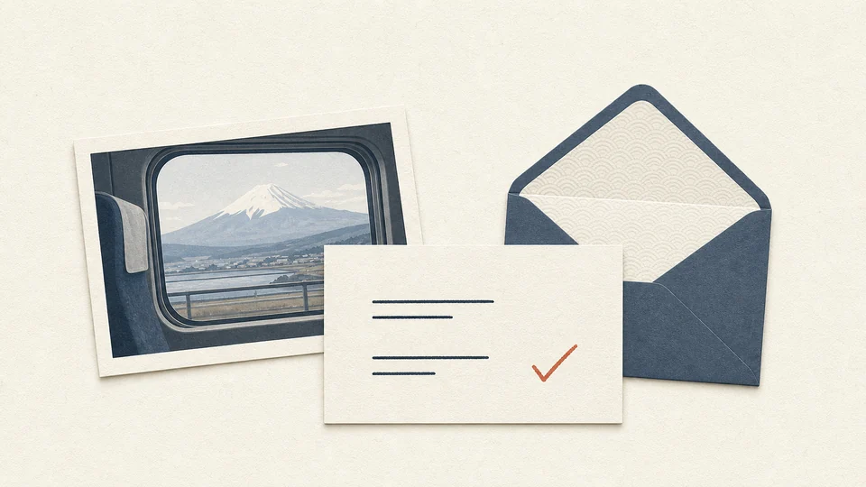

CONTACT
Contact et envoi de photos
Contactez-nous pour des photos, informations, avis ou demandes.

Photos et informations
Partagez vos photos à la fenêtre, informations locales ou remarques sur nos contenus.
Corrections
Signalez-nous toute erreur d'heure, de côté d'observation ou d'autre détail.
Avis
Vos impressions de voyage et vos idées d'amélioration sont aussi les bienvenues.
CONTACT
Contact
Ce projet est géré de manière indépendante ; les réponses peuvent prendre du temps. Avant de nous envoyer une photo, vérifiez qu'elle ne contient pas de données de localisation ou d'informations que vous ne souhaitez pas partager.